1. Overview and Prerequisites
1 minWelcome to the Build an Angular Web App with Firebase AI Logic Server Prompt Templates workshop! This workshop is split into two parts:
- Part 1: Firebase Configuration — Set up a Firebase project, configure billing with Google Cloud Credits, enable Firebase AI Logic (in template-only mode) and App Check, create Server Prompt Templates, and configure Firebase Remote Config.
- Part 2: Angular Web App Integration — Connect an Angular application to Firebase AI Logic and Remote Config to invoke your Server Prompt Templates securely from the client.
Prerequisites
- Node.js 24+ installed (https://nodejs.org/)
- Git installed
- A Gmail / Google account
- Redeem the Google Cloud Credit provided for this workshop before starting the Firebase billing setup.
- A stable internet connection (needed for
npm install, Firebase CLI scripts, and Gemini AI Logic API calls; manual Firebase Console fallbacks are included if conference Wi-Fi slows down the scripts).
2. Part 1: Create a Firebase Project and Web App
3 minGo to the Firebase Console at https://console.firebase.google.com/u/0/ to create a new Firebase project.

Create a Firebase project, enable Gemini in Firebase, and disable Google Analytics.
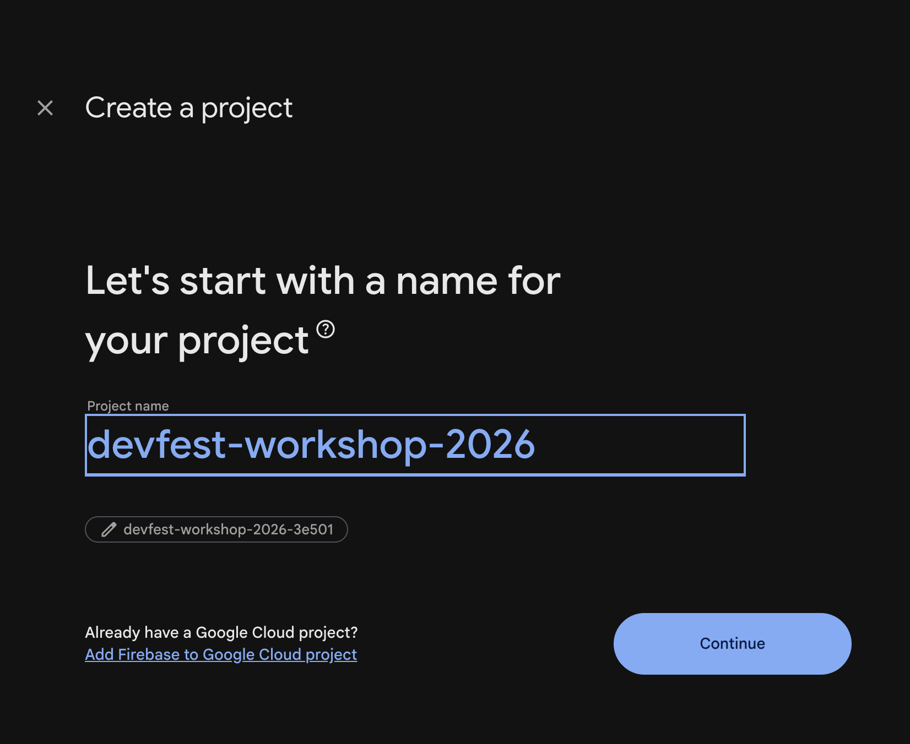
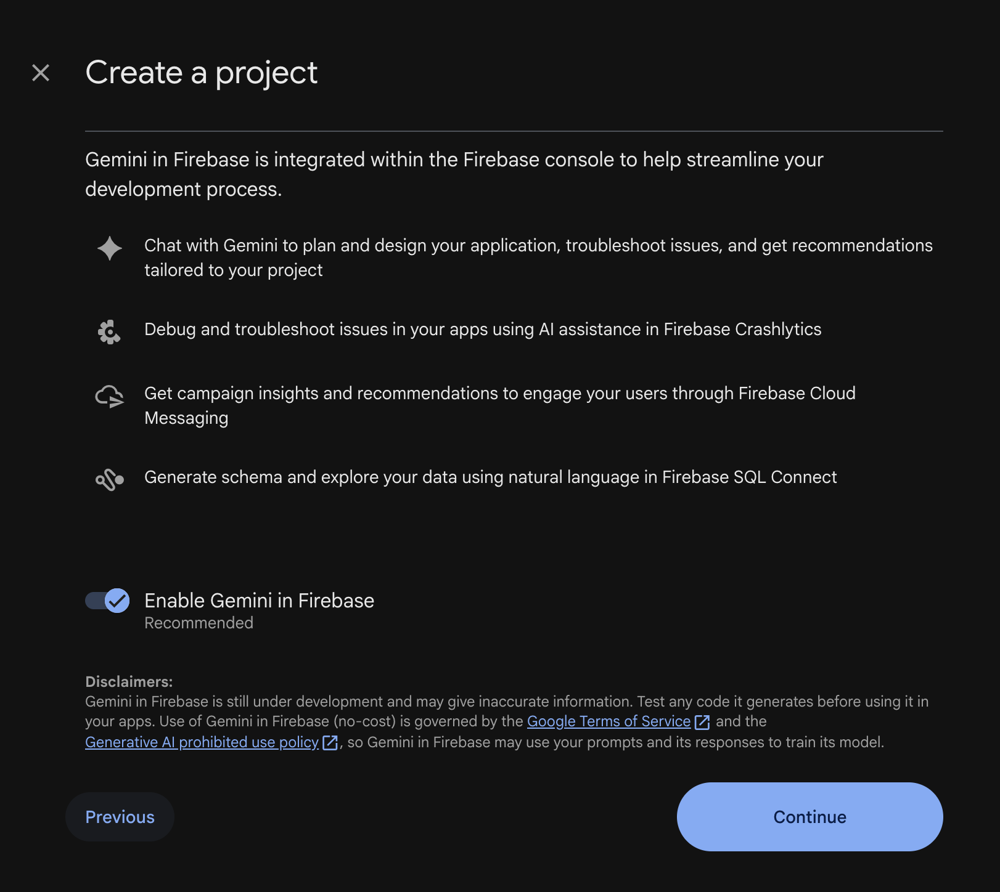
Once your project is created, add a new Web App (
</>) to your Firebase project from the Project Overview page.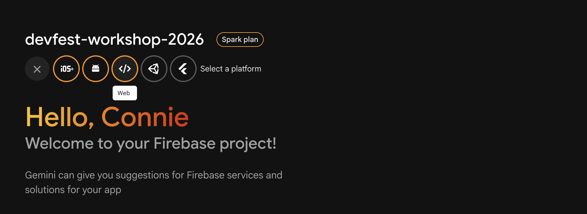
After adding Firebase to the web app, a Firebase configuration is created that we will use to initialize a Firebase app in the Angular app.

3. Part 1: Enable Firebase AI Logic
2 minEnable Firebase AI Logic
In the Firebase Console sidebar, navigate to Firebase -> AI Services -> AI Logic -> Get Started.
Enable the Gemini Developer API provider. Click the Get started with this API button.
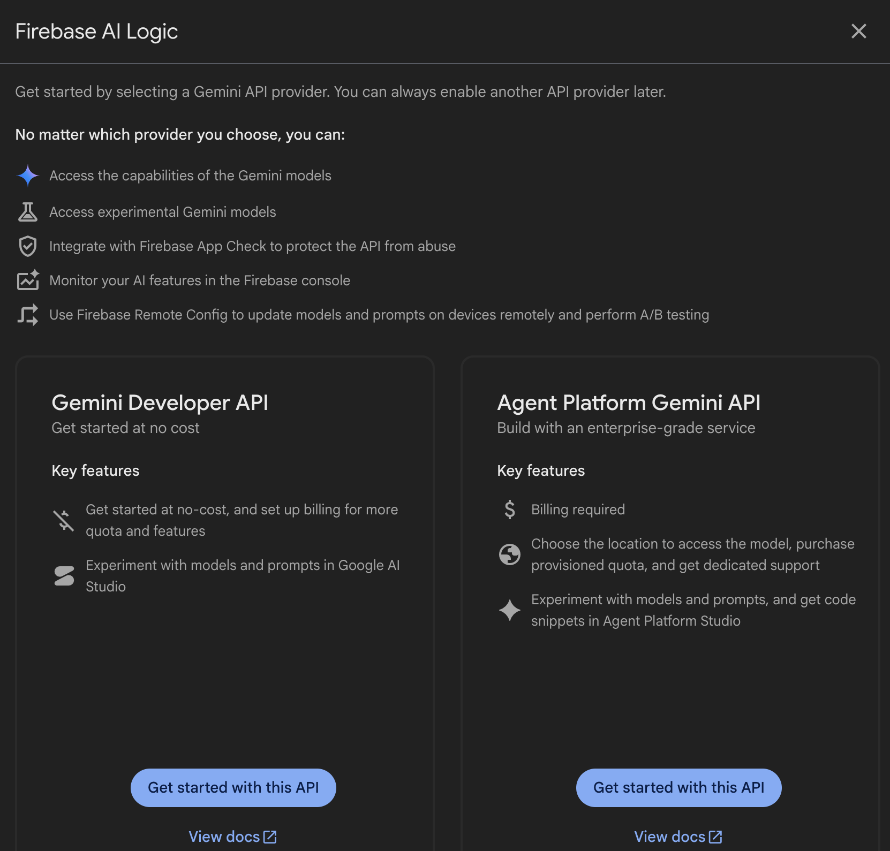
Keep the default settings to enable the API, AI Monitoring, and finish.
The overview of Firebase AI Logic displays the web app.

Click the Settings tab, scroll down to Enforce template-only mode to enable template-only mode so the client app can only execute pre-registered Server Prompt Templates.

4. Part 1: Enable App Check
2 minIn the Firebase Console sidebar, navigate to Firebase -> Security -> App Check -> APIs.
Look for Firebase AI Logic and expand the accordion item.
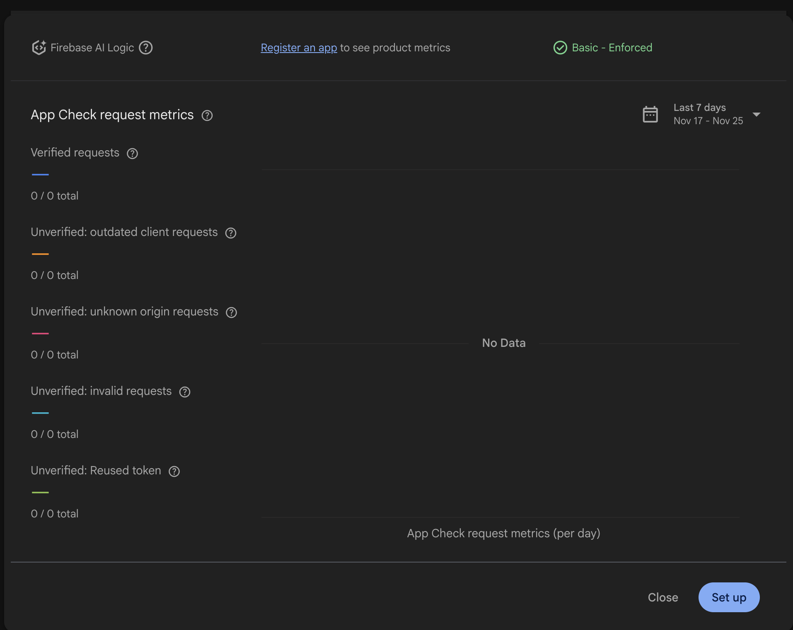
Click Set up and configure the following protections:
Baseline protection: Select Enforced
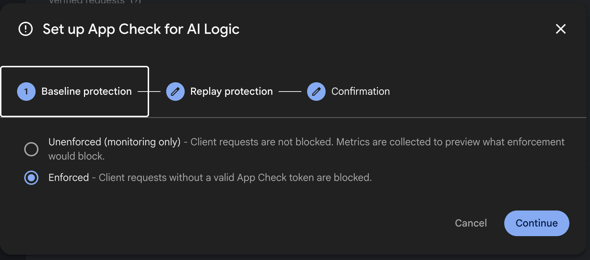
Replay protection: Select Enforced
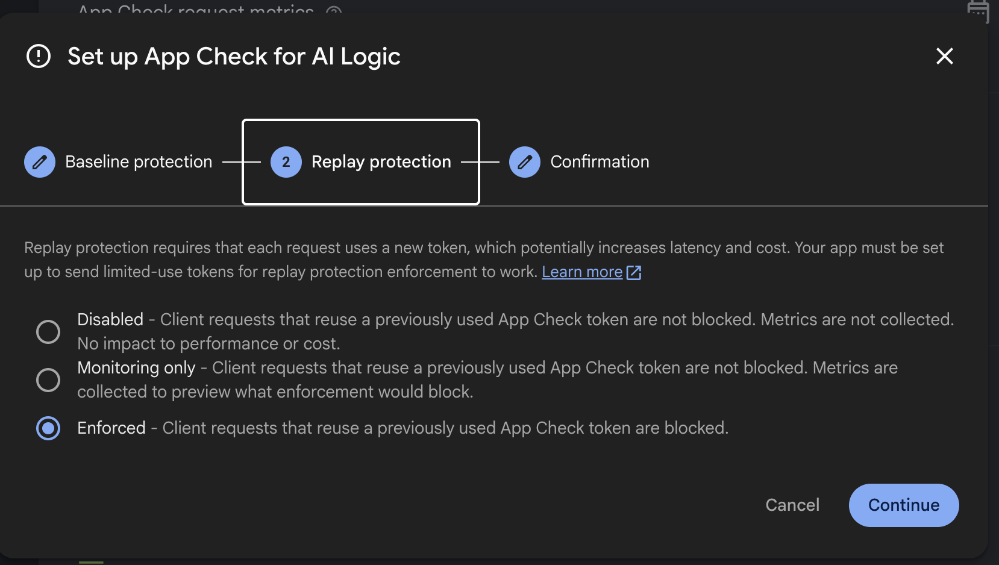
Confirmation: Confirm and save your App Check configuration.
5. Part 1: Assign Billing Account to the Firebase Project
2 minTo use Gemini models and features in Firebase AI Logic, link your redeemed Google Cloud Credits billing account to your Firebase project:
Navigate to the Google Cloud Billing Projects page at https://console.cloud.google.com/billing/projects.
Locate your Firebase project, click the three dots (
⋮) action menu at the end of the row, and choose Change billing.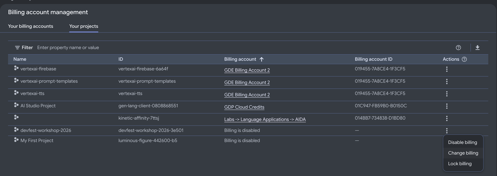
Change the billing account to your Google Cloud Credits billing account and confirm.
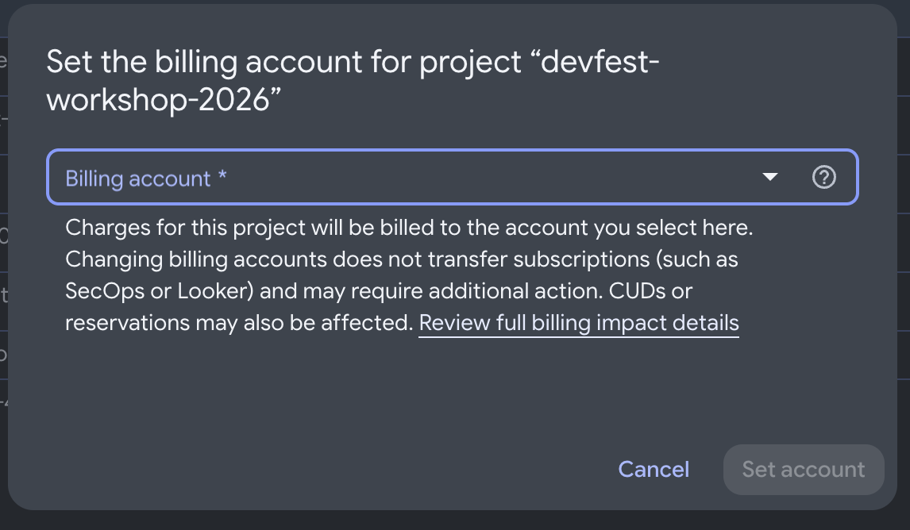
6. Part 1: Create Server Prompt Templates
15 minIn the Firebase Console sidebar, navigate to Firebase -> AI Logic -> Prompt templates:
You will create three Server Prompt Templates. For each template, copy the code blocks below into the corresponding sections in the Firebase Console UI:
- Copy the Configuration (
yaml) block into the Configuration section. - Copy the Prompt text block into the Prompt text section.
- Copy the Prompt input (
json) block into the Prompt input section.
- Click Create Template -> Blank Template.
a) Country Animal Guide (country-animal-guide-v0-0-1)
Template Name: Country Animal Guide
Template ID: country-animal-guide-v0-0-1
Configuration:
model: "gemini-nano-banana-2.1"
config:
candidateCount: 1
thinkingConfig:
thinkingLevel: MEDIUM
includeThoughts: false
tools:
- googleSearch
responseModalities: ["IMAGE"]
location: global
input:
schema:
country: string, The country name.
The configuration specifies the model name (Nano Banana 2.1), thinking configuration, Google Search grounding tool, response modalities (image), and input payload.
The Google Search tool is used to verify the country map outline, national flag, and native animals.
The input payload is a JSON object with a country property.
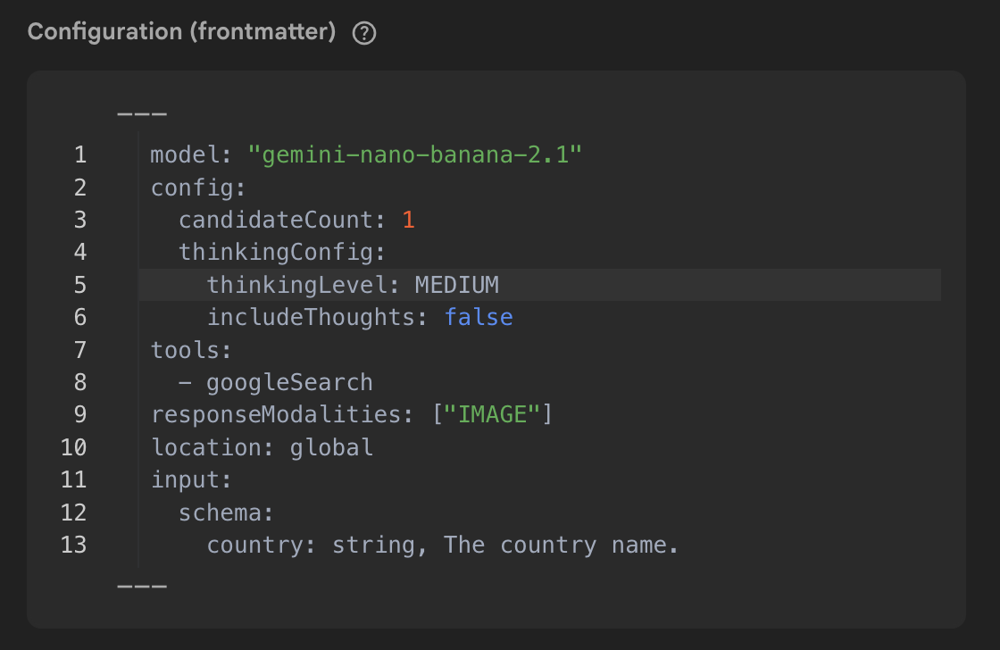
- Prompt text:
First, use Google Search to look up and verify: (1) the accurate geographic map outline and national flag of {{country}}, and (2) the most iconic native wild animals of {{country}}, their exact scientific names, natural habitat regions, and current IUCN Red List conservation status. Then, generate a hyper-realistic 3D animal guide infographic poster for {{country}}. The country shape is rendered as a raised, textured terrain map floating on a clean light gray surface. The most iconic native wild animals of {{country}} are placed as highly detailed, photorealistic 3D sculpted miniature figures at their correct geographic habitats across the map — each animal must be anatomically accurate, instantly recognizable, and true to its natural environment. The terrain biomes change across the map to reflect each animal’s habitat. White paths connect the key regions across the terrain. Around the map, floating 3D decorative props are scattered: a pair of binoculars, a nature field journal, animal paw prints, a magnifying glass, and a postage stamp seal reading "Animal Guide to {{country}}" The national flag of {{country}} is shown as a small realistic folded flag in the upper right corner. Each animal has a bold black label on the map, and beside the map, each animal has a neat checklist showing: common name, scientific name, conservation status, and habitat region — in clean sans-serif typography. A large bold title at the top reads: “ANIMAL GUIDE TO {{country}}" in black uppercase typography with the word {{country}} in heavy bold. The overall aesthetic is premium editorial nature content — soft studio lighting, photorealistic 3D render, white/light gray background, clean layout.
Apply this aspect ratio to the image: 1:1.
Apply this resolution to the image: 512.
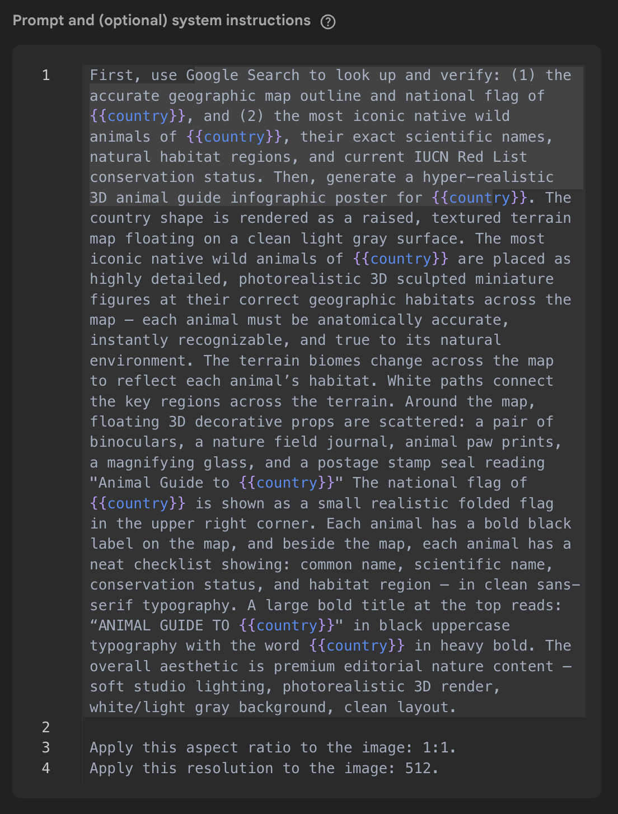
- Prompt input:
{
"country": "Malaysia"
}
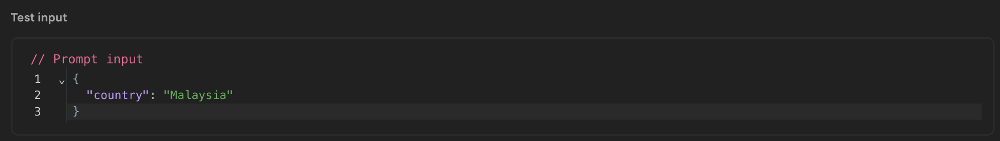
Click the Save template button to save all the changes.
Verify and Test:
Click Create formatted test request to verify the request.
Click Run Prompt test to get the result.
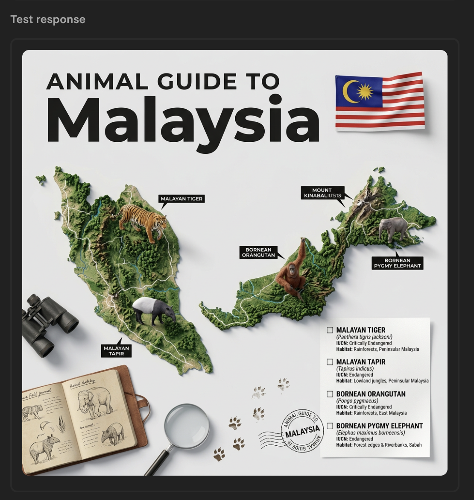
b) Country Food Guide (country-food-guide-v-0-0-1)
Template Name: Country Food Guide
Template ID: country-food-guide-v-0-0-1
Configuration:
model: "gemini-nano-banana-2.1"
config:
candidateCount: 1
thinkingConfig:
thinkingLevel: MEDIUM
includeThoughts: false
tools:
- googleSearch
responseModalities: ["IMAGE"]
location: global
input:
schema:
country: string, The country name.
- Prompt text:
First, use Google Search to look up and verify: (1) the top 9 most iconic traditional dishes of {{country}}, their exact names, and their authentic visual presentation, and (2) the national flag, iconic landmarks, and traditional cultural symbols of {{country}}. Then generate a vintage editorial food poster, "Top 9 Dishes of {{country}}", aged parchment beige background, 3x3 grid layout of hyper-realistic photographed dishes each on a rustic ceramic plate, bold black and dark red serif typography for title, large country name in distressed slab-serif font, national flag top-left corner, iconic country landmarks illustrated in vintage engraving style as decorative header and footer borders, small cultural icon illustrations in corners (traditional figures, instruments, architecture), diamond ornamental dividers between sections, bold dish name caption beneath each photo, warm golden lighting on food, ultra-detailed, editorial infographic style.
Apply this aspect ratio to the image: 2:3.
Apply this resolution to the image: 512.
- Prompt input:
{
"country": "Malaysia"
}
Click the Save template button to save all the changes.
Verify and Test:
- Click Create formatted test request to verify the request.
- Click Run Prompt test to get the result.
c) Summarize YouTube URL (summarize-youtube-url-v-0-0-1)
Template Name: Summarize YouTube URL
Template ID: summarize-youtube-url-v-0-0-1
Configuration:
model: "gemini-3.8-flash"
config:
thinkingConfig:
thinkingLevel: HIGH
includeThoughts: false
location: global
input:
schema:
url: string
mime_type: string
output:
format: json
schema:
summary: string, summary of the URL
topic?: string, topic of the URL
tags(array, list of tags relevant to the video): string
- Prompt text (contains system instruction and user prompt):
{{role "system"}}
You are an expert at summarizing videos, finding the topic, and generating tags relevant to their content. The user provides the URL and MIME type below.
{{role "user"}}
{{media url="url" mimetype="mime_type"}}
- Prompt input:
{
"mime_type": "video/mp4",
"url": "https://www.youtube.com/watch?v=BHGTA6ZEls4"
}
Click the Save template button to save all the changes.
Verify and Test:
- Click Create formatted test request to verify the request.
- Click Run Prompt test to get the result.
7. Part 1: Configure Firebase Remote Config
2 minIn the Firebase Console sidebar, navigate to Firebase -> DevOps & Engagement -> Feature Flagging -> Remote Config. Instead of adding parameters manually one by one, you can upload a JSON template file that defines both Server Prompt Template ID parameters (countryTemplateId and summarizeTemplateId), their STRING data types, descriptions, and default values in a single step.
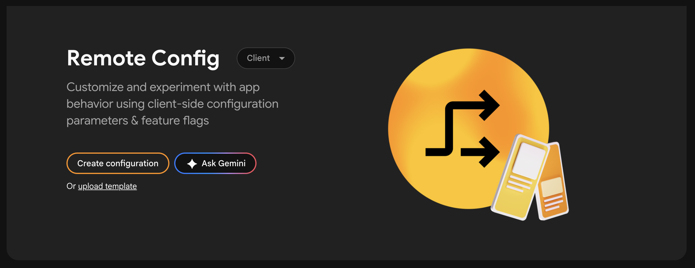
Download the template file: Download remoteconfig.template.json
Its contents (shown below for reference) define both parameters:
{
"parameters": {
"countryTemplateId": {
"defaultValue": {
"value": "country-food-guide-v-0-0-1"
},
"description": "Country Prompt Template Id",
"valueType": "STRING"
},
"summarizeTemplateId": {
"defaultValue": {
"value": "summarize-youtube-url-v-0-0-1"
},
"description": "Summarize Template Id",
"valueType": "STRING"
}
}
}
- On the Remote Config welcome screen, click upload template (below Create configuration) and select
remoteconfig.template.json. (If your project already has a Remote Config configuration, click the⋮menu -> Publish from a file instead.) - Review the imported parameters and click Publish changes to make them available to your application.
Expected Output
After publishing, the Remote Config Parameters list displays both parameters with their default Server Prompt Template IDs:
countryTemplateId(String):country-food-guide-v-0-0-1— Country Prompt Template IdsummarizeTemplateId(String):summarize-youtube-url-v-0-0-1— Summarize Template Id
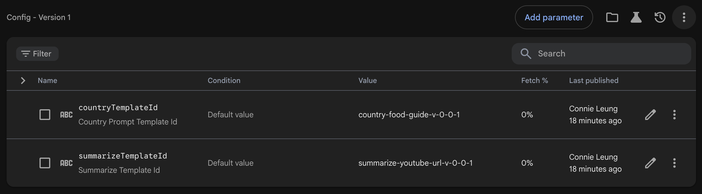
Your Angular application will fetch these values at runtime so you can switch prompt template versions in Firebase without redeploying the frontend.
8. Part 2: Clone Starter Repo, Link .firebaserc, and Run Setup Scripts
4 min
In Part 2, the Angular UI is already built for you. Your focus is connecting the Angular services to Firebase—App Check (Debug Mode), Remote Config, and Firebase AI Logic Server Prompt Templates—and wiring the component generate buttons.
- Clone the Angular starter repository and install dependencies:
git clone https://github.com/railsstudent/devfest-2026-angular-ai-logic-starter.git
cd devfest-2026-angular-ai-logic-starter
npm install
- Log in to the Firebase CLI and set your Firebase Project ID as the
defaultproject in.firebaserc:
npx firebase login
To find it in the Firebase Console, go to ⚙️ Firebase -> Settings -> General -> Project ID. Open .firebaserc and replace <your-firebase-project-id> with your Project ID:
{
"projects": {
"default": "<your-firebase-project-id>"
}
}
- Copy
firebase/.env.exampletofirebase/.env:
cp firebase/.env.example firebase/.env
In the Firebase Console, go to ⚙️ Firebase -> Settings -> General -> Your apps, copy the App nickname, and assign it to APP_FIREBASE_WEB_APP_NAME in firebase/.env:
APP_FIREBASE_WEB_APP_NAME="<App nickname>"
APP_FIREBASE_APPCHECK_DEBUG_TOKEN=""
Leave APP_FIREBASE_APPCHECK_DEBUG_TOKEN="" empty for your first run.
- Run the setup scripts to generate your Firebase config object and fetch your Remote Config defaults:
npm run config:generate
npm run config:fetch
Here is exactly what each script does on your machine:
npm run config:generate(firebase/scripts/generate-firebase-config.mjs):- Reads:
firebase/.envand.firebaserc(defaultproject). - Runs:
npx firebase apps:list WEB --json --project defaultandnpx firebase apps:sdkconfig WEB <appId> --json --project defaultvia the Firebase CLI. - Writes:
public/firebase.config.json. - Expected Output:
- Reads:
Success: Loaded .env file
Querying Firebase CLI for web app: "<Firebase Web App Display Name>"...
Found Web App "<Firebase Web App Display Name>" with appId: 1:...:web:... Fetching SDK configuration...
Successfully generated .../public/firebase.config.json
{
"app": {
"apiKey": "<your-api-key>",
"authDomain": "<your-project-id>.firebaseapp.com",
"projectId": "<your-project-id>",
"storageBucket": "<your-project-id>.firebasestorage.app",
"messagingSenderId": "<your-sender-id>",
"appId": "<your-app-id>"
},
"appCheckDebugToken": ""
}
npm run config:fetch(firebase/scripts/get-firebase-remote-config.mjs):- Reads:
.firebaserc(defaultproject). - Runs:
npx firebase remoteconfig:get --json --project defaultvia the Firebase CLI. - Writes:
public/remote-config-defaults.json. - Expected Output:
- Reads:
Successfully wrote .../public/remote-config-defaults.json
{
"countryTemplateId": "country-food-guide-v-0-0-1",
"summarizeTemplateId": "summarize-youtube-url-v-0-0-1"
}
Tip: Calling these Firebase CLI scripts is free, though subject to standard API rate limits—run them manually when needed rather than inside a loop or file watcher.
What this means: Even though Firebase Web SDK keys are public identifiers by design, committing an apiKey (AIzaSy...) to a repository triggers automated secret-scanning warning emails from GitHub and Google Cloud. Keeping public/firebase.config.json in .gitignore and generating it locally via script avoids noisy scanner alerts, while npm run config:fetch syncs public/remote-config-defaults.json with your project's Remote Config default values.
9. Part 2: Initialize Firebase in ConfigService
3 min
Because your Firebase project enforces App Check, initializing Firebase locally happens in three short steps across the next tabs:
Initialize
FirebaseAppinConfigServiceand hook it intoapp.config.ts.Enable
AppCheckwithReCaptchaEnterpriseProviderin debug mode and register your debug token in the Firebase Console.Save the debug token in
firebase/.envand regeneratepublic/firebase.config.json(see Use App Check with the debug provider).Open
src/app/core/firebase/config.service.ts:- At the top of the file, import
firebaseConfigfrom'@/public/firebase.config.json'(enabled via"resolveJsonModule": trueintsconfig.json) andinitializeAppfrom'firebase/app':
- At the top of the file, import
import firebaseConfig from '@/public/firebase.config.json';
import { initializeApp } from 'firebase/app';
- Inside
ConfigService(belowget app()), add theinitialize()method:
initialize(): void {
// Prevent double initialization
if (this.#firebaseApp) {
return;
}
this.#firebaseApp = initializeApp(firebaseConfig.app);
}
- Open
src/app/app.config.ts:- At the top of the file, add
injectandprovideAppInitializerto the'@angular/core'import, and importConfigService:
- At the top of the file, add
import { inject, provideAppInitializer, provideBrowserGlobalErrorListeners } from '@angular/core';
import { ConfigService } from './core/firebase/config.service';
- Inside
appConfig.providers, addprovideAppInitializerafterprovideRouter(...)so Angular callsConfigService.initialize()at application startup:
provideAppInitializer(() => inject(ConfigService).initialize()),
What this means: Initializes your FirebaseApp singleton once at Angular application startup using the locally generated public/firebase.config.json.
10. Part 2: Configure App Check Debug Mode and Register Your Debug Token in ConfigService
5 min
- Open
src/app/core/firebase/config.service.ts:- At the top of the file, import
initializeAppCheckandReCaptchaEnterpriseProviderfrom'firebase/app-check':
- At the top of the file, import
import { initializeAppCheck, ReCaptchaEnterpriseProvider } from 'firebase/app-check';
- Inside
initialize()(right belowthis.#firebaseApp = initializeApp(firebaseConfig.app);), configureFIREBASE_APPCHECK_DEBUG_TOKENand initialize App Check:
// configure app check debug token
(globalThis as Record<string, unknown>)['FIREBASE_APPCHECK_DEBUG_TOKEN'] =
firebaseConfig.appCheckDebugToken || true;
initializeAppCheck(this.#firebaseApp, {
provider: new ReCaptchaEnterpriseProvider('dummyKey'),
isTokenAutoRefreshEnabled: true,
});
- If your app is currently running, stop it (
Ctrl+C), then start the Firebase App Hosting emulator to restart the app:
npm run firebase:emulators:start
- Navigate to
http://localhost:5005in your browser and open Chrome DevTools -> Console. Find the App Check debug log:
Firebase App Check debug token: <app check debug token>
Copy <app check debug token> and paste it to a temporary location first.
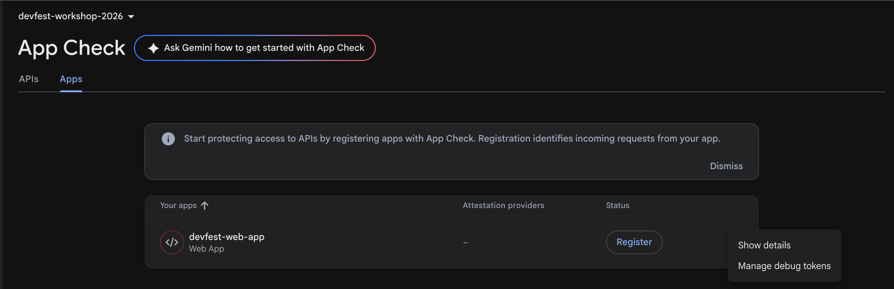
- In the Firebase Console, go to Firebase -> App Check -> Apps -> Your apps, click the
⋮(three dots) menu on the right side of your web app row (this menu is easy to miss), and select Manage debug tokens -> Add debug token.
(Placeholder: add screenshot of App Check -> Apps -> ⋮ -> Manage debug tokens.)
- Input a recognizable name (for example,
Local Dev), paste<app check debug token>into Value, and click Save.
What this means: Authorizes your local debug token in Firebase App Check so Firebase AI Logic accepts requests from your local machine while keeping App Check enforcement active.
11. Part 2: Update firebase/.env and Regenerate public/firebase.config.json
2 min
- Paste that exact registered UUID into
APP_FIREBASE_APPCHECK_DEBUG_TOKENinfirebase/.env:
APP_FIREBASE_PROJECT_ID="<Firebase Project ID>"
APP_FIREBASE_WEB_APP_NAME="<Firebase Web App Display Name>"
APP_FIREBASE_APPCHECK_DEBUG_TOKEN="12345678-90ab-cdef-1234-567890abcdef"
- Regenerate
public/firebase.config.jsonso"appCheckDebugToken"contains your registered UUID, then restart the emulator:
npm run config:generate
npm run firebase:emulators:start
What this means: Firebase AI Logic blocks unverified requests when App Check is enforced; initializing FirebaseApp + AppCheck on startup and pinning your registered debug token in firebase/.env authorizes your local environment across browsers without exposing secrets in Git.
12. Part 2: Fetch Server Template IDs into AppRemoteConfig in ConfigService
4 min
Next, update ConfigService to fetch your Remote Config parameters and store them in the remoteConfig signal (AppRemoteConfig).
- Open
src/app/services/config.service.tsand complete the second// TODOblock to import@/public/remote-config-defaults.json, initializeremoteConfigwith those defaults, callfetchAndActivate, and updatethis.remoteConfig:
// TODO (Step 3): Import the generated Remote Config defaults JSON
import remoteConfigDefaults from '@/public/remote-config-defaults.json';
import {
fetchAndActivate,
getRemoteConfig,
getString,
RemoteConfig,
} from 'firebase/remote-config';
// Inside ConfigService:
readonly remoteConfig = signal<AppRemoteConfig>({
countryTemplateId: remoteConfigDefaults.countryTemplateId,
summarizeTemplateId: remoteConfigDefaults.summarizeTemplateId,
});
private firebaseRemoteConfig?: RemoteConfig;
async loadRemoteConfig(): Promise<void> {
this.initFirebase();
this.firebaseRemoteConfig = getRemoteConfig(this.app);
// Fetch immediately on localhost; use a higher interval in production.
this.firebaseRemoteConfig.settings.minimumFetchIntervalMillis =
location.hostname === 'localhost' ? 0 : 43_200_000;
this.firebaseRemoteConfig.defaultConfig = remoteConfigDefaults;
await fetchAndActivate(this.firebaseRemoteConfig);
this.remoteConfig.set({
countryTemplateId: getString(this.firebaseRemoteConfig, 'countryTemplateId'),
summarizeTemplateId: getString(this.firebaseRemoteConfig, 'summarizeTemplateId'),
});
}
What this means: Decouples prompt template versions from your Angular bundle—your app asks Firebase Remote Config which template ID to run instead of hardcoding template names in client code.
13. Part 2: Implement AiService for Server Prompt Templates
4 min
Now implement AiService, which uses FirebaseApp from ConfigService to initialize Firebase AI Logic (getTemplateGenerativeModel) and exposes a reusable method accepting templateId and params.
- Open
src/app/services/ai.service.tsand complete the// TODOblock:
import { inject, Injectable } from '@angular/core';
import {
GenerateContentResult,
getAI,
getTemplateGenerativeModel,
GoogleAIBackend,
TemplateGenerativeModel,
} from 'firebase/ai';
import { ConfigService } from './config.service';
@Injectable({ providedIn: 'root' })
export class AiService {
private readonly configService = inject(ConfigService);
private templateModel?: TemplateGenerativeModel;
private async getTemplateModel(): Promise<TemplateGenerativeModel> {
if (!this.templateModel) {
await this.configService.initFirebase();
const ai = getAI(this.configService.app, {
backend: new GoogleAIBackend(),
});
this.templateModel = getTemplateGenerativeModel(ai);
}
return this.templateModel;
}
async generateFromTemplate(
templateId: string,
params: Record<string, unknown>,
): Promise<GenerateContentResult> {
const model = await this.getTemplateModel();
return model.generateContent({
templateId,
templateVariables: params,
});
}
}
What this means: Centralizes all Gemini calls behind a single reusable method where the client sends only a templateId and input parameters—prompts, model settings, and Google Search grounding remain protected on Firebase servers.
14. Part 2: Wire CountryService and YoutubeSummarizerService
4 min
Both feature services read their active template ID from ConfigService's AppRemoteConfig signal and pass (templateId, params) to AiService.
- Open
src/app/services/country.service.tsand complete the// TODOblock:
import { inject, Injectable } from '@angular/core';
import { AiService } from './ai.service';
import { ConfigService } from './config.service';
export interface GroundingSource {
title: string;
uri: string;
}
export interface CountryGuideResult {
text: string;
imageDataUrl: string | null;
webSearchQueries: string[];
sources: GroundingSource[];
}
@Injectable({ providedIn: 'root' })
export class CountryService {
private readonly aiService = inject(AiService);
private readonly configService = inject(ConfigService);
async generateCountryGuide(
country: string,
templateId = this.configService.remoteConfig().countryTemplateId,
): Promise<CountryGuideResult> {
const result = await this.aiService.generateFromTemplate(templateId, { country });
const response = result.response;
const candidate = response.candidates?.[0];
let imageDataUrl: string | null = null;
for (const part of candidate?.content?.parts ?? []) {
if (part.inlineData) {
imageDataUrl = `data:${part.inlineData.mimeType};base64,${part.inlineData.data}`;
break;
}
}
const groundingMetadata = candidate?.groundingMetadata;
const webSearchQueries = groundingMetadata?.webSearchQueries ?? [];
const sources: GroundingSource[] = (groundingMetadata?.groundingChunks ?? [])
.map((chunk) => chunk.web)
.filter((web): web is { title?: string; uri?: string } => Boolean(web?.uri))
.map((web) => ({
title: web.title || web.uri || 'Source',
uri: web.uri!,
}));
return {
text: response.text(),
imageDataUrl,
webSearchQueries,
sources,
};
}
}
- Open
src/app/services/youtube-summarizer.service.tsand complete the// TODOblock:
import { inject, Injectable } from '@angular/core';
import { AiService } from './ai.service';
import { ConfigService } from './config.service';
@Injectable({ providedIn: 'root' })
export class YoutubeSummarizerService {
private readonly aiService = inject(AiService);
private readonly configService = inject(ConfigService);
async summarize(
url: string,
templateId = this.configService.remoteConfig().summarizeTemplateId,
): Promise<string> {
const result = await this.aiService.generateFromTemplate(templateId, { url });
return result.response.text();
}
}
What this means: Keeps domain logic modular—each feature service knows its own input shape ({ country } or { url }) and passes the active template ID from ConfigService's AppRemoteConfig signal into AiService.
15. Part 2: Connect Component Generate Buttons to Services
3 minNow connect the pre-built Angular UI buttons to CountryService and YoutubeSummarizerService.
- In the Country Guide component template and TypeScript class, wire the Generate button
(click)event to a component method that callsCountryService:
<button type="button" (click)="onGenerateCountryGuide()" [disabled]="loading()">
Generate
</button>
async onGenerateCountryGuide(): Promise<void> {
const templateId = this.configService.remoteConfig().countryTemplateId;
const country = this.countrySignal();
this.result.set(await this.countryService.generateCountryGuide(country, templateId));
}
- In the YouTube Summarizer component template and TypeScript class, wire the Summarize button
(click)event to a component method that callsYoutubeSummarizerService:
<button type="button" (click)="onSummarizeVideo()" [disabled]="loading()">
Generate Summary
</button>
async onSummarizeVideo(): Promise<void> {
const templateId = this.configService.remoteConfig().summarizeTemplateId;
const url = this.youtubeUrlSignal();
this.summary.set(await this.youtubeService.summarize(url, templateId));
}
What (click)="..." does / What this means: Clicking the button calls the component handler method, which calls CountryService or YoutubeSummarizerService—passing the active template ID (from ConfigService's AppRemoteConfig signal) and the signal form values (country or url)—to generate and render the AI response in the UI.
16. Part 2: Test the App on http://localhost:5005
3 min
Verify that the entire local stack works end-to-end before testing Remote Config template switching.
- Open
http://localhost:5005in your browser. - Test Country Guide: Enter a country (for example,
Japan) and click Generate. Verify that the app displays the dish description, the generated food image (country-food-guide-v-0-0-1), and the Google Search grounding sources.
(Placeholder: add screenshot of the Angular app showing the Country Food Guide result.)
- Test YouTube Summarizer: Paste a public YouTube URL and click Generate Summary. Verify that
summarize-youtube-url-v-0-0-1returns a concise summary.
What this means: Confirms the full pipeline—App Check debug token -> Remote Config template IDs -> AI Logic Server Prompt Templates -> grounded multimodal UI output—works together locally.
17. Part 2: Update countryTemplateId to Animal Guide and Refresh
4 min
Now update countryTemplateId in Remote Config from country-food-guide-v-0-0-1 to country-animal-guide-v0-0-1 using the CLI scripts, then refresh the browser to see the AI output change with zero Angular code changes and zero redeployment.
- Pull the live Remote Config template from Firebase into
firebase/remote-config-template.json:
npm run config:pull
npm run config:pull(firebase/scripts/deploy-remote-config.mjs pull) callsnpx firebase remoteconfig:get --json --project defaultand writesfirebase/remote-config-template.json.- Expected Output:
📥 Pulling active Remote Config template from Firebase Cloud...
✅ Successfully saved live template to: .../firebase/remote-config-template.json
- Open
firebase/remote-config-template.jsonand updatecountryTemplateId'sdefaultValue.valuefromcountry-food-guide-v-0-0-1tocountry-animal-guide-v0-0-1:
"countryTemplateId": {
"defaultValue": {
"value": "country-animal-guide-v0-0-1"
},
"description": "Country Prompt Template Id",
"valueType": "STRING"
}
- Push and publish the updated Remote Config template back to Firebase:
npm run config:push
npm run config:push(firebase/scripts/deploy-remote-config.mjs push) fetches the latestversion/etagmetadata from Firebase to prevent409conflicts, updatesfirebase/remote-config-template.json, and runsnpx firebase deploy --only remoteconfig --project default.- Expected Output:
🔄 Preparing to push Remote Config template to Firebase Cloud...
🔍 Fetching latest version metadata to avoid 409 conflicts...
🚀 Deploying template via Firebase CLI...
🎉 Remote Config deployment successfully completed!
- Refresh your Angular app at
http://localhost:5005and submitJapanagain. The app now generates a national animal guide and image—with no Angular code changes and no redeployment needed.
(Placeholder: add screenshot of the Angular app showing the Country Animal Guide result.)
What this means: Proves that changing Remote Config switches the live AI behavior and prompt template immediately on next fetch without rebuilding or redeploying your frontend.
18. Part 2: Add Real-Time Remote Config Listener & Revert Without Refresh
4 minFinally, add a real-time Remote Config listener in ConfigService so updates to AppRemoteConfig take effect in-memory without refreshing the page, then revert countryTemplateId back to country-food-guide-v-0-0-1.
- Open
src/app/services/config.service.tsand addonConfigUpdate+activate(see Add a real-time Remote Config listener):
import { activate, onConfigUpdate } from 'firebase/remote-config';
// Inside ConfigService:
listenForUpdates(): void {
if (!this.firebaseRemoteConfig) {
return;
}
onConfigUpdate(this.firebaseRemoteConfig, {
next: async (configUpdate) => {
if (configUpdate.getUpdatedKeys().has('countryTemplateId')) {
await activate(this.firebaseRemoteConfig!);
this.remoteConfig.update((current) => ({
...current,
countryTemplateId: getString(this.firebaseRemoteConfig!, 'countryTemplateId'),
}));
}
},
error: (error) => console.error('Remote Config listener error:', error),
});
}
Revert
countryTemplateIdback tocountry-food-guide-v-0-0-1:- Run
npm run config:pull. - Edit
firebase/remote-config-template.jsonsocountryTemplateIdis"country-food-guide-v-0-0-1". - Run
npm run config:push(or update and publish in Firebase Console -> Remote Config).
- Run
Without refreshing
http://localhost:5005, submitJapanagain.CountryServicereads the updatedcountryTemplateIdfromConfigService'sAppRemoteConfigsignal and reverts to generating the Food Guide.
What this means: Demonstrates real-time Remote Config + Angular Signal reactivity—your running app picks up server-side template changes instantly in memory without even a browser refresh.
Further Reading & Resources
- Angular Documentation: https://angular.dev
- Get started with Firebase AI Logic Server Prompt Templates: https://firebase.google.com/docs/ai-logic/server-prompt-templates/get-started?api=dev
- Enforce App Check for Firebase AI Logic: https://firebase.google.com/docs/ai-logic/app-check?api=dev
- Manage Server Prompt Template versions with Remote Config: https://firebase.google.com/docs/ai-logic/server-prompt-templates/versioning-with-remote-config?api=dev#add-a-real-time-remote-config-listener